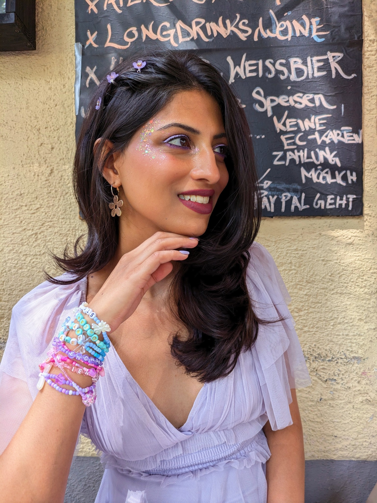

SELECT & COMPRESS
Learning from less
Coreset selection and dataset distillation: finding or creating compact datasets that preserve what matters for learning.
A CURIOUS MIND. A DATA-CENTRIC LENS.
PhD researcher at DFKI & RPTU
Kaiserslautern-Landau, Germany
I study how we can help models learn more from less data. My research brings together data selection, dataset distillation, and continual learning, with a growing focus on vision–language models.

01 / RECENT NEWS
02 / RESEARCH
What does a model really need to learn?
I explore the role of training data: what we keep, what we compress, and how we keep learning.
SELECT & COMPRESS
Coreset selection and dataset distillation: finding or creating compact datasets that preserve what matters for learning.
REMEMBER & ADAPT
Continual learning: exploring how data selection can support learning from new experiences while retaining previous knowledge.
CONNECT & UNDERSTAND
A growing focus on vision–language models, and how data-efficient learning can connect images and text.
03 / PUBLICATIONS
Papers on data-efficient learning,
diffusion models, and multimodal systems.
A hierarchical approach to diffusion classification that prunes irrelevant label groups, reducing class evaluations and speeding up inference.
Presented at ICANN in Padua, Italy. Arundhati S. Shanbhag and Brian B. Moser contributed equally.
Adaptive coreset selection using class-specific hyperspheres to identify useful training samples in noisy datasets.
Dataset distillation with different teacher architectures for supervision and regularization, encouraging greater diversity in synthetic training data.
A training-free approach to choosing representative data subsets by balancing coverage and local density.
A survey of diffusion-based image super-resolution, covering foundations, methods, open challenges, and future research directions.
Exploring audio-visual environmental information for human–robot interaction.
04 / THE PERSON BEHIND THE PAPERS
My path has taken me through recommendation systems, diffusion models, and multimodal robotics.
Outside research, I enjoy cooking, reading, gardening, crocheting, and travelling to experience different cultures.
GOOD IDEAS START WITH A CONVERSATION
Questions about my research, shared interests, or a potential collaboration?
I’d love to hear from you.